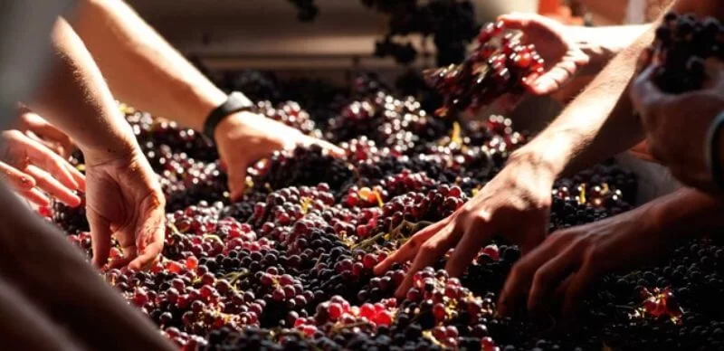

A Vinheria Agnello é uma empresa familiar que iniciou suas atividades a 15 anos em São Paulo há mais de 15 anos. Dirigida pelo experiente Sr. Giulio e sua filha Biaaca, nos consolidamos como um verdadeiro refúgio para os amantes de vinho da metrópole.
Com uma única loja física, construimos nossa reputação através do atendimento especializado. Nossos vendedores são preparados para orientar o cliente sobre uvas, regiões, vinícolas e sugerir as melhores harmonizações. Para nós, o vinho não é apenas uma bebida, é uma experiência que merece a consultoria correta.
Ao longo dos anos, nosso maior orgulho foi educar o paladar dos nossos clientes, muitos dos queis chegam iniciantes e se tornam verdadeiros apaixonados por esse universo vasto e diverso.
